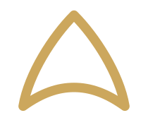

Photo/images/qob-coat-mlifa/main.webp
La capuche de la djellaba, coupée pour aujourd'hui.
Laine du Moyen Atlas, sfifa appliquée à la main, boutons aqad noués un par un. Fabriqué à Casablanca.
Les pièces
Trois coupes pour commencer. Chacune part d'un vêtement qui existe déjà — la djellaba, le caftan — et le remonte sur une carrure plus large.
Photo/images/djellaba-homme-mlifa/main.webp
Photo/images/overshirt-sfifa/main.webp

Le qob
Le qob est la capuche pointue de la djellaba. Coupée en pointe, elle tombe dans le dos quand elle n'est pas portée. C'est la forme qui donne son nom à la marque.
La sfifa qui ferme chaque ouverture et l'aqad noué dans le même galon viennent du même métier. Rien n'est rapporté : la fermeture est du fil.